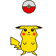

手機網頁履歷
陳翌雋
自我介紹:
臺北教育大學 藝術與造形設計學系 碩士畢業
1~2年工作經驗 希望職稱：美術、美編設計、動畫
您好：我是陳翌雋,畢業於臺北教育大學 藝術與造形設計學系,個性主動積極且具有責任感,藝術創作是我的興趣。
娛樂觀賞作品: https://www.youtube.com/channel/UCs1S0CgsKTNjOVeJWyPDCYw
座右銘:成功是失敗經驗次數的累積
興趣:
繪畫 看電影
學歷:
1.臺北教育大學
藝術與造形設計學系 碩士畢業
2017/9~2021/1
2.中國文化大學
美術系 大學畢業
2013/9~2017/6
工作經歷:
總年資
1~2年工作經驗
1.(動畫與繪畫)直播
youtube
其他娛樂事業人員
2021/7~仍在職
youtube(動畫與繪畫)直播
網址:https://www.youtube.com/channel/UCs1S0CgsKTNjOVeJWyPDCYw
2.網拍
shopee
產品行銷人員
2021/4~仍在職
shopee網拍
網址:https://shopee.tw/shop/433253979/
3.資料處理
健保局 其他醫療保健服務業 30~100人
志工人員 桃園市中壢區
2016/7~2016/8
2個月
資料整理:
1.資料分類:將資料文件複製與影印、檢查校對資料的不良。
2.資料蓋章:操作電腦檢查資料文件並進行蓋章。
3.資料設置:將分類資料文件定位放置於原有位置。
求職條件:
希望性質:
全職工作
上班時段:
日班、可配合輪班
可上班日:
錄取後兩週可上班
希望待遇:
依公司規定
希望地點:
桃園市、新竹縣市、台北市、新北市
遠端工作:
對遠端工作有意願
希望職稱:
美術、美編設計、動畫
希望職類:
商業設計、美術設計、廣告設計、平面設計／美編人員、多媒體動畫設計師
希望產業:
電子資訊／軟體／半導體相關業、藝文相關業、出版業、廣播電視業、廣告行銷／傳播經紀業
工作內容:
美術設計 動畫設計 視覺設計 產品設計
語文能力:
英文
聽：略懂 說：略懂 讀：略懂 寫：略懂
專長:
美術設計
影像處理類：Adobe Photoshop、 Illustrator、Adobe After Effects
多媒體設計類：SolidWorks、Pro engineer、3DS MAX
辦公室應用類：PowerPoint、Word
排版軟體類：Adobe InDesign
動畫 : Live2D
平面設計與排版:
使用工具: Illustrator、Adobe Photoshop、Adobe Indesign
△電腦排版設計、電腦繪圖軟體操作、設計印刷基本認知、色彩應用繪製、產品包裝設計
△可以獨立作業，完成交代事項
攝影與影片剪輯:
使用工具: Adobe Photoshop、PowerDirector Video Editor、Adobe After Effects
△利用PowerDirector Video Editor、Adobe After Effects完成影片剪輯及動態製作
△擁有攝影基礎知識
工作技能:
平面設計理論、各式封面設計、色彩調配設計、色彩應用繪製、素材辨識與處理、插畫表現技巧、廣告設計概念、電腦繪圖軟體操作、繪圖工具與軟體操作、繪圖軟體安裝設定、動畫人物故事流程製作、產品包裝設計、產品外型設計、電腦輔助設計軟體操作、繪製2D／3D模具設計圖
圖軟體安裝設定
其他工作技能:
素描 水彩 水墨畫 油畫 卡通人物素描
2d動畫設計:
Live2D動畫製作
證照:
企劃相關證照: 丙級廣告設計技術士
其他證照:
人像速寫專業檢定測驗中階認證
自傳
【關於我】
我是陳翌雋，畢業於臺北教育大學 藝術與造形設計學系碩士班。個性樂觀，國中時就發掘自己對美術的興趣，因此大學、碩士選擇進入相關科系就讀。
【求學經歷】
大學就讀於文化大學美術學系，而研究所是繼續朝向此共同目標領域邁進。短短四年中，除了學習美術與藝術課程外，在求學階段對於繪畫創作都有一些深入的了解。大四開始積極籌畫畢業專題，內容為參展繪畫與畢業展，過程為佈置展覽會場與室內規劃。
【研究經歷】
動畫、漫畫與遊戲席捲全球，新世代青年對美少女與怪獸素材的偏愛， 儼然形成一御宅族經濟與文化。本創作研究，以少女與怪獸為發想素材，採 水墨插畫的方式，重新闡述彼此關係並呈現創作脈絡。
本篇章結構，第一章為創作動機與目的及研究架構，第二章探討文 獻與歷史脈絡，包括水墨與插畫創作技法與應用、美少女與怪獸創作素材、 藝術家畫風及設計與創作流程，歸納創作可能構想。第三章至第五章為系列 創作與紀錄。第六章總結研究成果與建議。
藉由導入設計流程並以少女與怪獸意象組合變化，發展三大創作方向： a. 少女與怪獸；b. 女超人與怪獸；c. 花獸。每一創作方向各三件作品，證 實設計流程確實可有系統及有效的，裨益於創作發想及細節優化，對於設計 方法應用於繪畫創作相關研究有所貢獻。
【工作經歷】
youtube直播是我的娛樂節目興趣,它是一種學習與表現自我能力的嘗試。
shopee 網拍是我的直銷買賣興趣,它是一種學習與展現自我經營的嘗試。
【目標願景】
相信以藝術造形與美術創作設計一職為第一選擇的我，已經準備好接受工作上挑戰，期望未來能獲得更多的成長與成就。非常懇切希望能有機會參與，並且能進一步成為 貴公司的一份子，貢獻能力。
想法至今，未來規劃從未偏離過美術創作與設計，除了不斷精進自己的能力外。這幾年學習研究累積之經驗，讓我感受到藝術除了美以及色彩外，更重要的是能顧及公司收入及品牌形象。如何在有限的資源裡，以最好的效率及絕佳的美感吸引人關注，並在預定時間內完成主管及公司交辦的事項。
作品集:
1.https://www.youtube.com/channel/UCs1S0CgsKTNjOVeJWyPDCYw
2.https://www.pixiv.net/users/8789686/artworks

作品介紹
備份作品